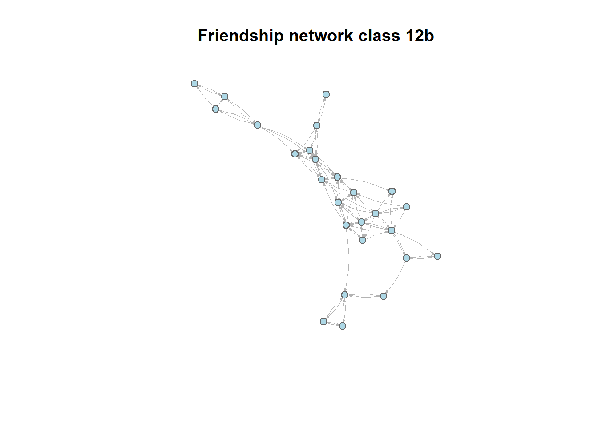
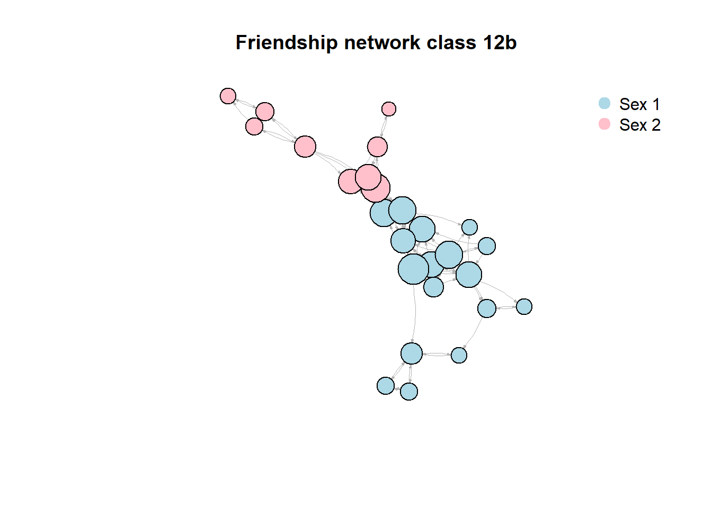

Last compiled on mei, 2026
On this page you will find my code from tutorial 3.
PupilsWaveV <- read_dta(file = "PupilsWaveV.dta")
class12b <- PupilsWaveV %>%
filter(schoolnr == "12b") # keep only one classclass12b_igraph <- graph_from_data_frame(
d = class12b %>%
select(namenr, age, sex, friend1:friend12) %>%
pivot_longer(
cols = friend1:friend12,
names_to = "sourcevar",
values_to = "to"
) %>%
filter(!is.na(to)) %>%
rename(from = namenr) %>%
relocate(to, .after = from),
vertices = class12b %>%
select(namenr, age, sex),
directed = TRUE
)given the data collection this shoud be a directed network.
is_directed(class12b_igraph)#> [1] TRUEset.seed(123)
plot(
class12b_igraph,
layout = layout_with_fr(class12b_igraph),
vertex.label = NA,
vertex.size = 6,
vertex.color = "lightblue",
vertex.frame.color = "grey40",
edge.arrow.size = 0.15,
edge.width = 0.6,
edge.color = "grey70",
edge.curved = 0.15,
main = "Friendship network class 12b"
)
vcount(class12b_igraph)#> [1] 26ecount(class12b_igraph)#> [1] 91edge_density(class12b_igraph)#> [1] 0.14count_components(class12b_igraph)#> [1] 1diameter(class12b_igraph)#> [1] 7mean_distance(class12b_igraph)#> [1] 2.853598transitivity(class12b_igraph, type = "average")#> [1] 0.5886984node_data <- data.frame(
namenr = V(class12b_igraph)$name,
sex = V(class12b_igraph)$sex,
degree = degree(class12b_igraph, mode = "all")
)
t.test(degree ~ sex, alternative = "less",
conf.level = .95,
var.equal = TRUE,
data = node_data)#>
#> Two Sample t-test
#>
#> data: degree by sex
#> t = 0.59944, df = 24, p-value = 0.7228
#> alternative hypothesis: true difference in means between group 1 and group 2 is less than 0
#> 95 percent confidence interval:
#> -Inf 3.274745
#> sample estimates:
#> mean in group 1 mean in group 2
#> 7.294118 6.444444V(class12b_igraph)$degree <- degree(class12b_igraph, mode = "all")
V(class12b_igraph)$color <- ifelse(
V(class12b_igraph)$sex == 1,
"lightblue",
"pink"
)
set.seed(123)
plot(
class12b_igraph,
layout = layout_with_fr(class12b_igraph),
vertex.size = V(class12b_igraph)$degree + 8,
vertex.color = V(class12b_igraph)$color,
vertex.label = NA,
edge.arrow.size = 0.15,
edge.width = 0.6,
edge.color = "grey70",
edge.curved = 0.15,
margin = -0.1,
main = "Friendship network class 12b"
)
legend(
"topright",
legend = c("Sex 1", "Sex 2"),
col = c("lightblue", "pink"),
pch = 19,
pt.cex = 1.5,
bty = "n"
)